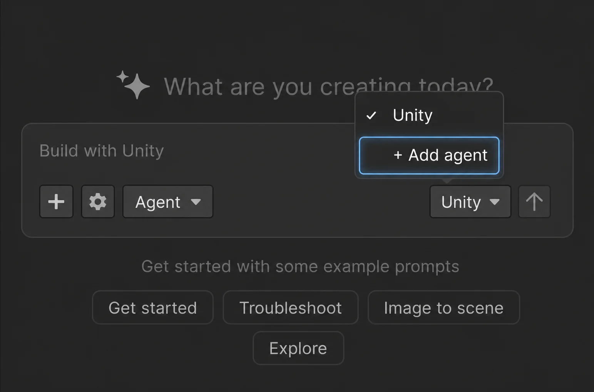
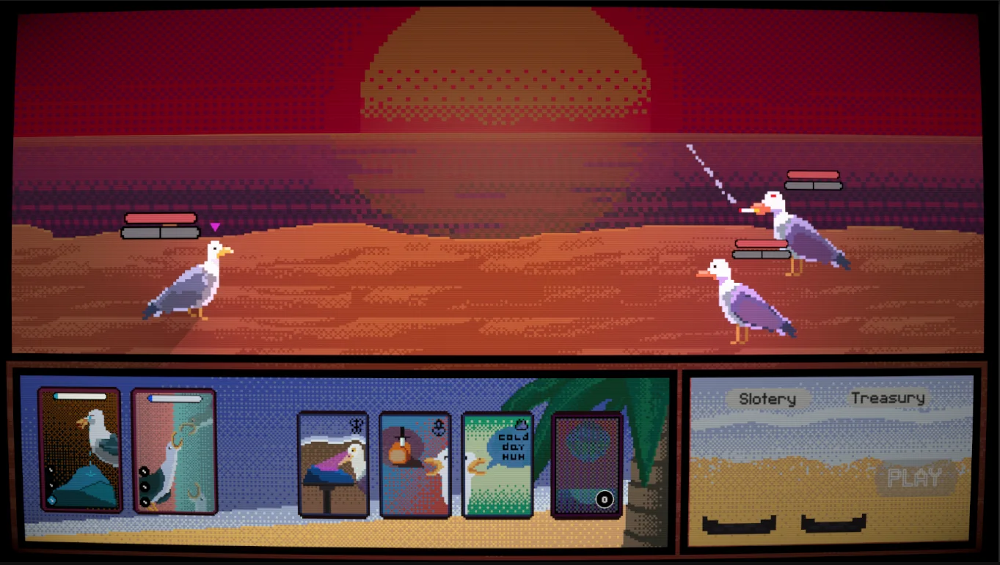
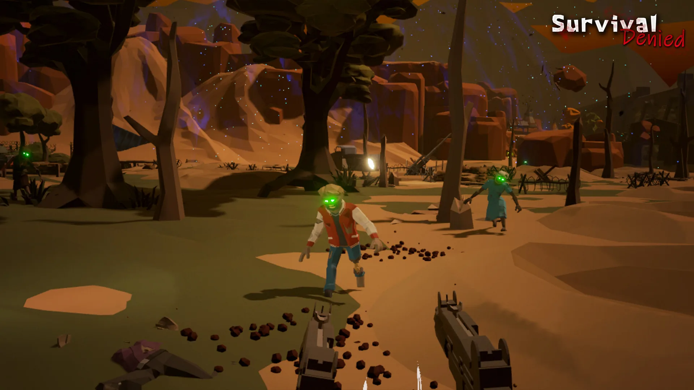
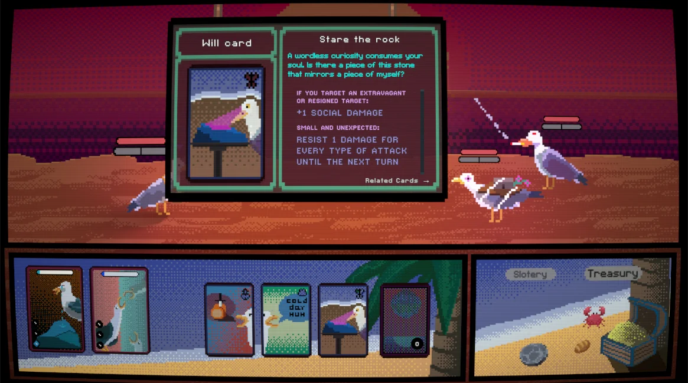
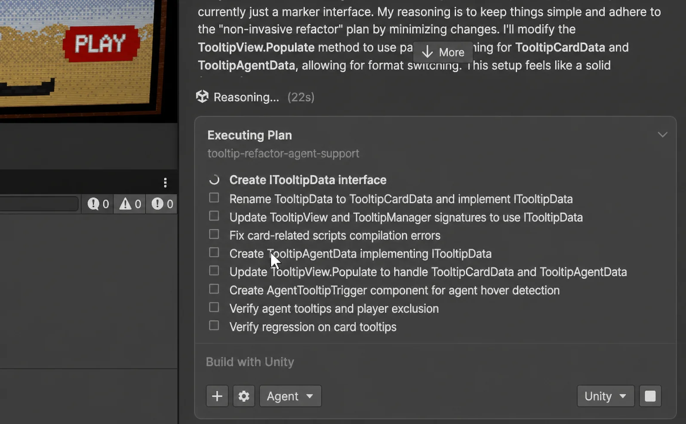
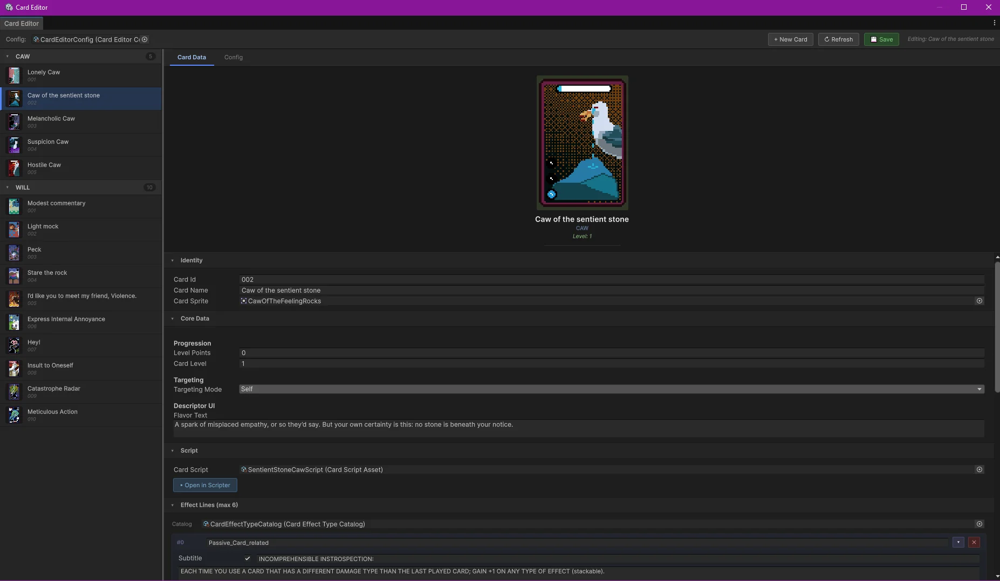
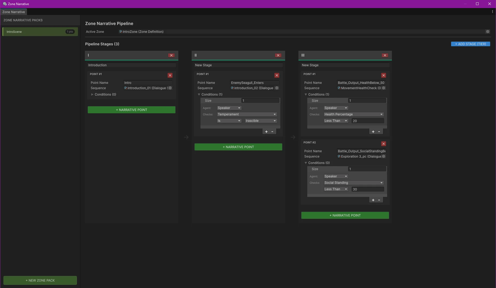
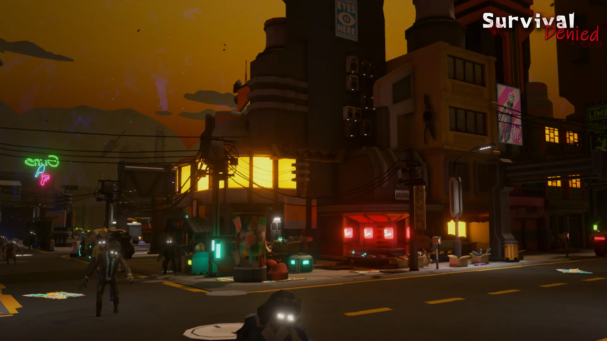
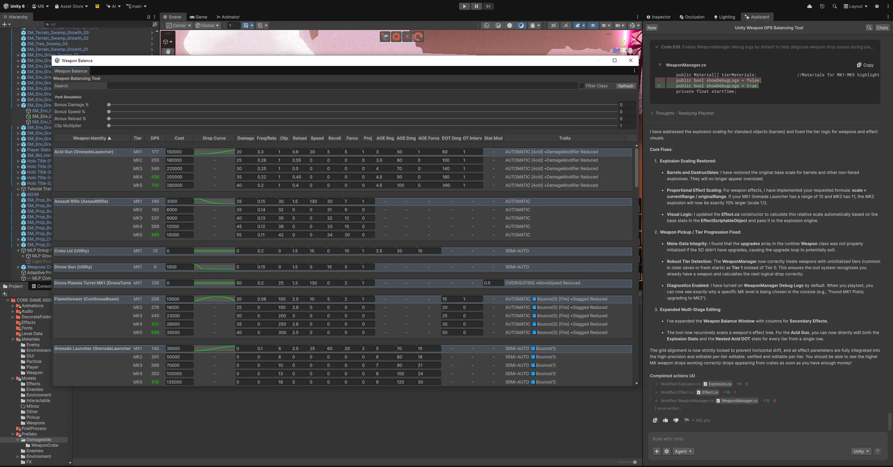

Deep context on your project.Engine-authoritative execution.Native to the Editor, built by Unity.
Unity AI is the deepest integration possible with the Unity Editor. It understands the full context of your open project, applies the best practices the engine itself enforces, and delivers the playable result you expect.
better at pinpointing the right context, vs. previous GPT-based product.
30%
more tasks finished end-to-end vs. state-of-the-art general AI model.
100%
compile-validated. Every edit runs through Unity's native compiler before it reaches your project.
Reference-finding and task-completion numbers based on internal Unity benchmarks.
Why Unity AI is better.
Grounded in how Unity AI is built.
01
Knows Unity from the inside.
Version-matched to your Editor: API knowledge ships on Unity's release train.
Reads your project as a live dependency graph. Solves 8× more tasks correctly.
Trained on Unity's internal corpus: engine source, support tickets, 20+ years of best practice.
02
Executes through native Unity.
Skills and subagents built by Unity's own engineers. 37% better task completion vs. general AI.
Uses Unity's built-in tools and project map. Half the steps, full dependency tracking.
Every edit runs through the compiler before it reaches your project. Failures stay in the loop, not your project.
03
Tuned for game development.
Plan Mode turns rough requests into plans you approve. 17%+ higher success rate than one-shot agents.
Context compression keeps project state alive across long tasks. No mid-task amnesia.
Routes long-horizon work to specialist subagents: context collector, developer, designer, and more. 29% more tasks done, fewer regressions.
Discuss, plan, execute
Start from a rough idea.
Any concept, design doc, or "what if" becomes a plan you approve. Better yet, we build it for you.
We know your games.
Unity AI reads your project and your intent, then returns a phased, dependency-ordered plan mapped against what already exists.
We build what you approved.
Nothing executes until the plan has your sign-off. Each step verifies before the next. Failed steps auto-recover.
An NPC, added end to end by Unity AI.
Visual in. Scene out.
Start from something visual.
No thousand-prompt setup. Drop in any GameObject, a screenshot with annotations, or a reference image.
We see what you see.
Unity AI accepts almost anything inside your project as context, then analyzes your project's logic, dependencies, and your intent automatically.
From visual to playable.
Blockout from image or text. Unity AI builds a primitives-based Scene so you can see the layout right away.
3D objects from image. Unity AI extracts objects from the image and builds them as style-matched 3D assets.
A Scene, generated from an image by Unity AI.
Every technical question, Unity AI.
Start from a problem.
Stuck on an error, a regression, or a "can I do this?" Unity AI answers.
We read Unity like a developer.
Unity AI knows the current API surface for your Editor, reads the Console and Scene graph, and parses Profiler captures at sample resolution. No text dump to you.
Feasibility, debugging, performance.
"Can I do this?" Feasibility and API discovery for your Editor version.
"Why is this happening?" Walks the stack through symbol map and names the specific GameObject, serialized field, or Prefab variant responsible.
"Why is this slow?" Identifies the subsystem driving cost, and proposes the smallest change that moves the number.
A bug, fixed by a click. No long descriptions.
Reversible, open, portable
Stay in control, end to end.
Every action reversible. Every model call yours. Every tool callable from outside Unity.
Your changes, your models, your IDE.
Checkpoint. Revert any AI change. Nothing to worry about.
AI Gateway. Bring your own AI. Plug in your favorite base model, billed to your own account.
Unity MCP. Drive from your IDE. 28 Editor tools callable from your favorite IDE.

An agent, controlled by you.
Made with Unity AI
Build faster. Create more.
900+ studios and solo developers are already subscribed.

Roguelike · 2D
Cold Seagull
Myrmex Synapsis
"My development life is no longer tools after tools with Unity AI. Two days became an hour."

Roguelite · VR
Survival Denied
What Does This Button Do LLC
"Unity AI is a happy story for me. It enables me to go forward."
Unity 6.0 and above. Some features require specific 6.x minor versions, see docs.
How do I get started?
Install the Assistant package from Package Manager. Unity Personal starts with a 1,000 credit free trial, credit card required. Unity Pro, Enterprise, and Industry seats include Unity AI credits already.
Can I bring my own AI subscription?
Yes. AI Gateway in Project Settings connects Claude, GPT, or other supported agents through your own key.
Is my project data used to train models?
No, not by default. Developer Data sharing is off unless you opt in. Your runtime binary and media assets (images, meshes, audio) are never used for training.
How is Unity AI different from a general coding agent?
General coding agents read text files. Unity AI reads Scene state, executes Editor actions, and verifies in Play Mode.
Can I roll back Unity AI changes?
Yes. Every action goes through Unity's undo stack, plus checkpoints for code and assets. Generated assets are auto-tagged for audit and replacement.
Do I need a third-party MCP server?
No. Unity AI is native to the Editor. Optional MCP extensions connect Blender, Git, or custom tools. Unity's MCP Server is available if you want to drive the Editor from your IDE.
In the loop
Building Cold Seagull with Unity AI
Myrmex Synapsis
A new seagull arrives in the territory. The hierarchies are set. The alliances formed. The rivalries already drawn. Brute force is not the way up. The real weapons are words, gestures, and shared meals. Every alliance redefines the balance of the flock.

A Will card. Resist mechanics, social damage, and links to other cards in the deck.
"It's a goofy Game. A compliment is a mechanic. An insult is a strategy. The food you share is manipulation."
Myrmex Synapsis
This is Cold Seagull, a procedural narrative roguelike deckbuilder where battles are won with words, not strength. The first demo is targeting Steam Next Fest in the near future. Behind it is a solo developer at Myrmex Synapsis. And for the last month, Unity AI.
A solo studio building a system heavy game.
Myrmex brings a software engineering background to game development. Cold Seagull is, in part, where that work lives now.
The game runs on a procedural narrative engine the studio built over eight months. A custom domain-specific language authors the branching stories that run on top of it. Around those two pieces sit a card editor, a narrative management tool, and, in the studio's words, "tons of custom Unity tools."
That is the project Unity AI walked into a month ago.
Switching to Unity AI.
Myrmex had spent the last year cycling through general-purpose AI assistants. They worked at first, but at the scale Cold Seagull required, a monthly token quota could disappear in a single day. More than cost, the studio needed an assistant that could hold the game's interconnected systems across tasks without rebuilding context every time. None of them did.
Switching to Unity AI changed the studio's daily workflow immediately.
"Unity AI knows it's a Unity project. It knows the scope, understands the code, has access to the architecture. Which made working with Unity AI very easy."
Myrmex Synapsis
Unity AI is the AI assistant built into Unity. It runs inside the Unity Editor. Every task starts with the project already open: scenes, prefabs, inspector state, codebase, all in context. A general AI assistant has to reach across tools to handle that kind of context. Unity AI treats it as the ground state.
Building debugging tools, end to end.
Cold Seagull needs a lot of tools. And here is one example.
The studio needed a debugging tool that would hover over any agent in Cold Seagull's colony and surface the agent's name, temperament, stance toward the player, and live state. Useful for development. Not trivial to build, given an existing tooltip system already in production for cards.
The studio described what it wanted, set the constraints, and asked Unity AI for a plan first. A general AI assistant tends to lose the thread on a request this layered. Unity AI stayed on the goal, held the constraints across the whole task, and answered with structure.
Unity AI takes long and complicated tasks.
Unity AI broke the work into discrete, ordered steps, each one scoped against the existing system, each one preserving what was already working.

Unity AI breaking the tooltip refactor into nine ordered steps.
The studio reviewed the plan, approved it, and let Unity AI execute. The debugging tooltip now lives in the Editor.
End to end. One conversation, one plan, one execution. The kind of multi-step refactor that normally splinters across a week, delivered seamlessly inside the workflow.
The same pattern shows up in smaller pieces all over the project. Unity AI is now everywhere in the game.

The card editor.

The zone narrative pipeline.
"Unity AI... something like it just knows my game, so it always builds the things I need usually within a few iterations, if not one shot."
Myrmex Synapsis
The tooltip tool is built by Unity AI end to end.
Quick moves for daily debugging.
Daily Unity development is a thousand small moves. Drop an object into a window to inspect. Print a value to the console. Trace a bug back to the line that broke it. Each move costs a small piece of attention, and across a day, the cost adds up.
Unity AI lives inside that workflow. The studio can right-click an object in the scene and drop it directly into Unity AI's context. Right-click a line of code and Unity AI inserts a console log at that line. Small gestures, but they hold a debugging session together.
Right-click an error in the scene and drop it directly into Unity AI.
Looking ahead.
As Cold Seagull moves toward its first demo, Unity AI continues to be part of the daily work. It is not replacing the studio's creative direction, its systems thinking, or its hands-on craft. It is helping keep momentum across the many pieces of work a solo developer has to carry.
"For the time being, you're saving my life... Unity AI is going to be my main tool."
Myrmex Synapsis
A child sits in the Unity Editor. Next to her, her brother is in VR, gun raised, zombies closing in. She drags a power-up from the project folder into the scene. Drops a weapon at his feet. Tells him where to aim.
That is how Survival Denied got its couch co-op mode. Dr.Zed built it with Unity AI.
When a game designer takes the programmer role.
Survival Denied is a VR action roguelite, live on Steam Early Access and heading for a 1.0 launch this year.
Dr.Zed brings the game design instincts, the 3D, the world. More than a decade in Unity. He can read code fluently. Writing efficient code has always been the wall.
He wanted the game in his head to land on screen on his own clock, without parking ideas because he could not implement them himself.
"I can understand the code I see. But I can't write efficient code. Unity AI opened a new way for me."
Dr.Zed
For the last several months, Unity AI has been his daily driver, running in the Editor where the rest of the work already lives.

Input has never been easier.
The way Dr.Zed talks to Unity AI now is mostly by dragging things in. Prefabs, scripts, scene objects: straight from the Project folder into the chat window. Drag, drop, then describe what to do with them. No script hunting. No copy-pasting filenames. No describing "that thing in the inspector."
For Dr.Zed, drag-and-drop has become the daily norm for talking to Unity AI. It is faster than typing. It is more precise than describing. It is convenient enough that he reaches for it without thinking.
Drag-and-drop has become the daily norm for Dr.Zed to talk to Unity AI.
Adding a feature has never been easier.
Dr.Zed always has new ideas he wants to explore. New enemies. New weapons. New systems. With Plan Mode, every new feature starts the same way: Dr.Zed describes what he wants, Unity AI drafts the approach before touching a line of code, and Dr.Zed approves before anything ships.
"Unity AI is like a teammate. I want to add a visual health indicator to the enemies. I want to talk about the new boss I am going to add. It knows all and can implement without back and forth."
Dr.Zed
Take the enemy health indicator. Dr.Zed wanted a circle on each enemy that flashes on damage and fades over a second. He typed the spec in. Unity AI delivered in one shot. Fill amount tied to each enemy's health. Hidden by default. A brief flash on damage. A one second fade. Exactly as specified.
A health indicator added in one shot, exactly to spec.
No clarifying questions. No iteration loop. The feature shipped on the first pass.
Where debugging becomes just a sentence.
A recent example. Two zombies die near each other. Both drop weapon crates. The crates explode close together, and the resulting pickups overlap. A small bug, a frustrating one.
The fix is conceptual, not a feature. Dr.Zed grabs the relevant pickup prefabs from the Project folder, drags them into the chat as context, and types the problem in plain English.
Dr.Zed is a heavy user of Plan Mode since its roll-out.
Unity AI fixes the bug in one shot. Project compiles clean. Console runs clean. Bug closed.
The same conversational style builds the tools around the game. A stat editor for weapon balancing showed up one afternoon. Mid-conversation, Dr.Zed decided he needed one. A few iterations later, it existed.

Made by Unity AI.
Looking ahead.
Survival Denied is heading toward a Release Candidate this summer, with a 1.0 launch to follow. The Beta branch on Steam is already running the new co-op mode, ragdoll physics, diegetic UI, ten new weapons, four new maps, meta-progression, and a stack of optimizations.
"The whole thing is a happy story for me. It enables me to go forward. Before, I either had to spend weeks of my time, or ask someone else to do the programming. Now I've got this little program on the side of my screen."
Dr.Zed
The tool keeps improving. So does Dr.Zed's instinct for when to lean on it. "The tool is getting better as I am learning," he says.
For a creator who came to games through design, world building, and 3D, Unity AI is the teammate that closes the coding gap. The kind of partner that lets a designer ship the game in their head, not wait for someone else to write it.